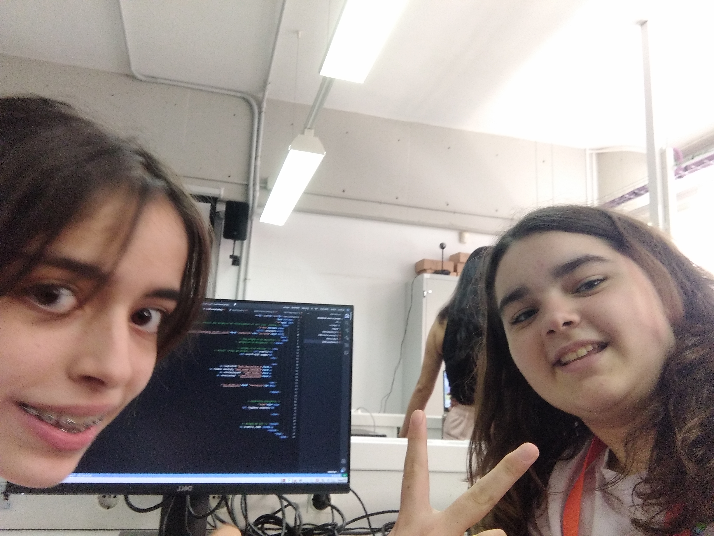
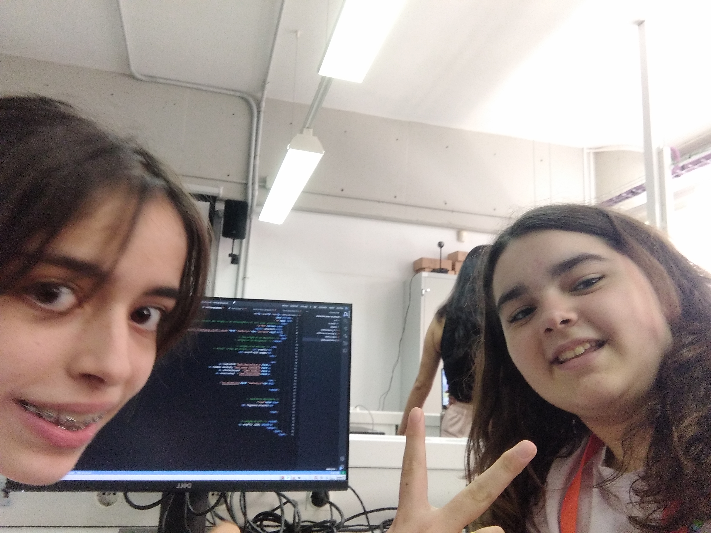
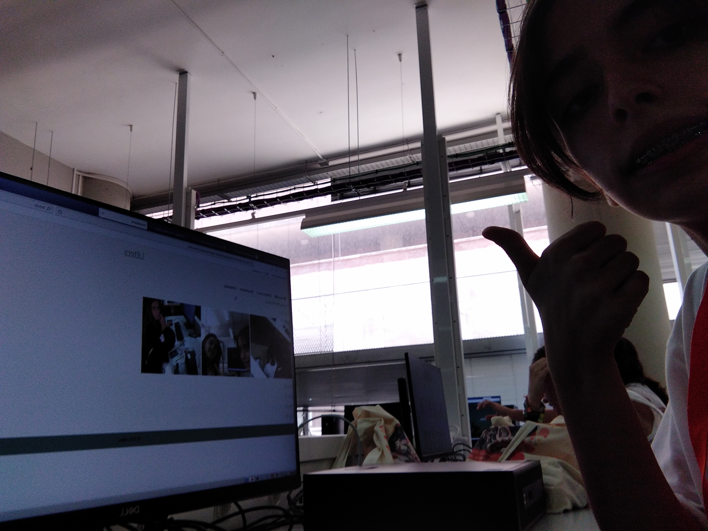
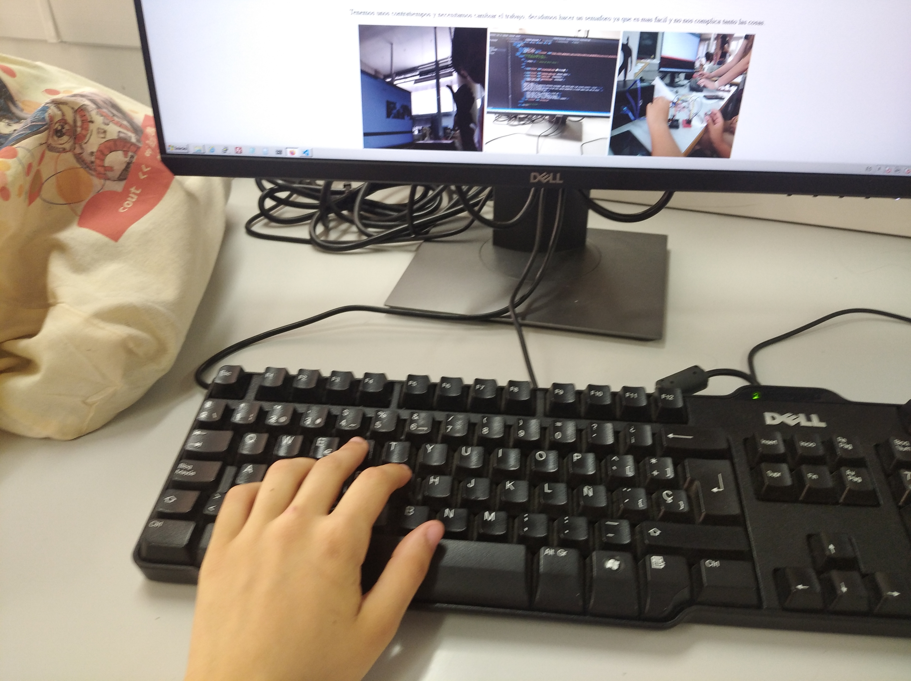
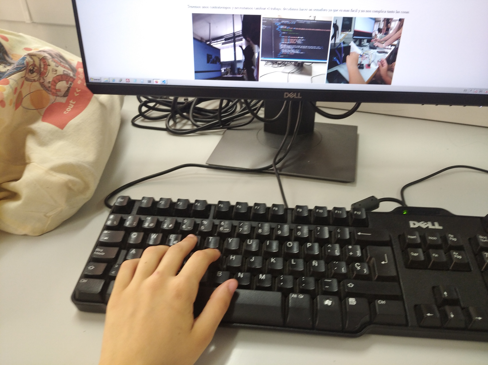

Día 1:
Empezamos con todo, la página web empienza a coger forma. Se han hecho las primeras pruebas con los motores y cortamos lo necesario para la maqueta.
Sentimos que vamos bastante bien, hemos avanzado bastante en este primer día y estamos preparadas para los que nos quedan.
 


Día 2:
Tenemos unos contratiempos y necesitamos cambiar el trabajo, decidimos hacer un semáforo ya que es mas fácil y no nos complica tanto las cosas.
Es realmente una pena, y por esto no soltamos la idea inicial de hacer un ascensor. Nuestro equipo aun está ideando maneras de combatir estos problemas.
Quizá la idea del semáforo sea un complemento, siempre es bueno tener un plan b.


Día 3:
Al final todo fue viento en popa y retomamos la idea inicial como tenías previsto. nuestro proyecto saldrá como se tenía previsto.
Estamos ya con piezas finales de la maqueta y logrando la programación requirida para el ascensor.


Día 4:
Hoy hay bastante nerviosismo, ya que es el último día, pero está saliendo todo bien, también estamos haciendo un powerpoint para complementar nuestra exposición mañana.
Hemos pintado nuestra base y estamos por ensamblar todo. ¡Qué poco falta!

 

Día 5:
Hoy el el último día, el día de la exposición, el más importante, hoy no podemos en el proyecto ya que hay que tenerlo acabado, ya veremos como nos sale la presentación.
Aun así, estaremos haciendo las últimas pruebas y revisando el correcto funcionamiento de todo.